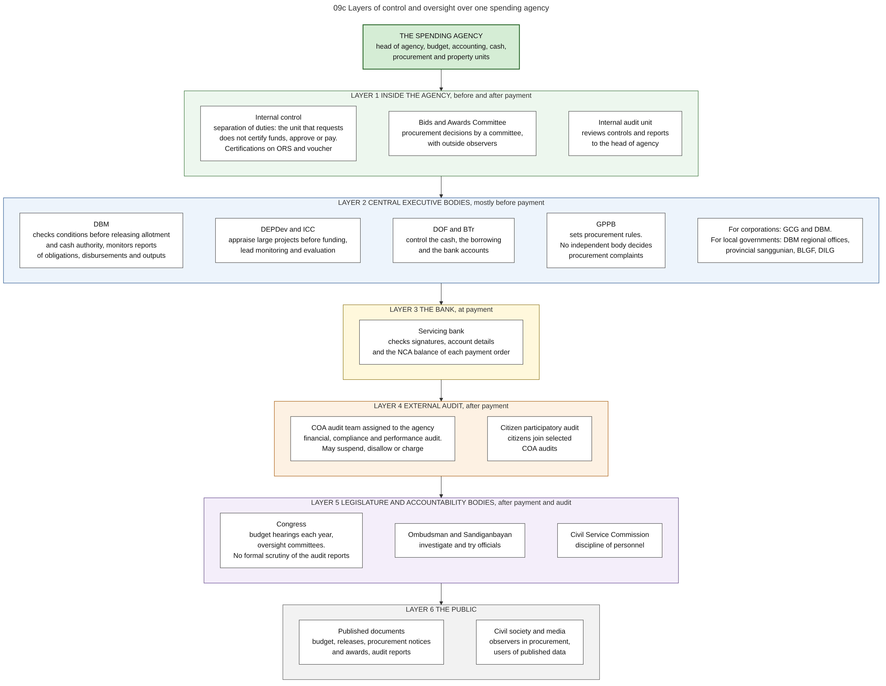

Diagram 09c · Mermaid flowchart
Layers of control and oversight over one spending agency
Question: Who checks a spending agency, at which moment (before or after the money is paid), and on what?

What the diagram shows
- Question: who checks a spending agency, at which moment (before or after the money is paid), and on what?
- How to read it: the agency is at the top. Each frame below is one layer of control, from the closest to the most distant. The text in each box says what that body checks and when.
- Sources: internal audit standards named for DBM and COA, kinds of COA audit, citizen participatory audit [ROADMAP2024]. Release conditions and reports checked by DBM [NBC599][JC2019-1]. Project and investment review by DEPDev and the ICC [ICC-NEWS][PIP-MEMO]. National evaluation policy led by DEPDev with DBM [SFA11]. Procurement rules and observers [RA12009]. Bank check on payment orders [CL2013-16A]. Audit after payment [COA2011-002][CONST IX-D]. Budget hearings [INQ-GUIDE]. Weak legislative review of audit reports, no independent procurement complaints body [PEFA2025]. GCG, BLGF roles [COB][eSRE].
- From the auditing code: internal control is the direct responsibility of the head of the agency [PD1445 s.124]. The officer who draws checks may not be a member of the accounting unit or of the internal control unit [PD1445 s.92]. COA may also examine bodies outside the government that receive subsidies, and only for the funds that they received [PD1445 s.29].
- General knowledge, not opened in a source here: the names of the oversight committees, the roles of the Ombudsman, Sandiganbayan and Civil Service Commission, the transparency seal and freedom of information rules.
Code

---
title: "09c Layers of control and oversight over one spending agency"
config:
flowchart:
wrappingWidth: 900
---
flowchart TB
%% QUESTION THIS DIAGRAM ANSWERS: who checks a spending agency, at which moment (before or after the money is paid), and on what?
%% READING: the agency is at the top. Each frame below is one layer of control, from the closest to the most distant. The text in each box says what that body checks and when.
%% SOURCES: internal audit standards named for DBM and COA, kinds of COA audit, citizen participatory audit [ROADMAP2024]. Release conditions and reports checked by DBM [NBC599][JC2019-1]. Project and investment review by DEPDev and the ICC [ICC-NEWS][PIP-MEMO]. National evaluation policy led by DEPDev with DBM [SFA11]. Procurement rules and observers [RA12009]. Bank check on payment orders [CL2013-16A]. Audit after payment [COA2011-002][CONST IX-D]. Budget hearings [INQ-GUIDE]. Weak legislative review of audit reports, no independent procurement complaints body [PEFA2025]. GCG, BLGF roles [COB][eSRE].
%% FROM THE AUDITING CODE: internal control is the direct responsibility of the head of the agency [PD1445 s.124]. The officer who draws checks may not be a member of the accounting unit or of the internal control unit [PD1445 s.92]. COA may also examine bodies outside the government that receive subsidies, and only for the funds that they received [PD1445 s.29].
%% GENERAL KNOWLEDGE, NOT OPENED IN A SOURCE HERE: the names of the oversight committees, the roles of the Ombudsman, Sandiganbayan and Civil Service Commission, the transparency seal and freedom of information rules.
AGY["THE SPENDING AGENCY<br/>head of agency, budget, accounting, cash,<br/>procurement and property units"]:::agy
subgraph L1["LAYER 1 INSIDE THE AGENCY, before and after payment"]
direction LR
I1["Internal control<br/>separation of duties: the unit that requests<br/>does not certify funds, approve or pay.<br/>Certifications on ORS and voucher"]
I2["Bids and Awards Committee<br/>procurement decisions by a committee,<br/>with outside observers"]
I3["Internal audit unit<br/>reviews controls and reports<br/>to the head of agency"]
I1 ~~~ I2
I2 ~~~ I3
end
subgraph L2["LAYER 2 CENTRAL EXECUTIVE BODIES, mostly before payment"]
direction LR
C1["DBM<br/>checks conditions before releasing allotment<br/>and cash authority, monitors reports<br/>of obligations, disbursements and outputs"]
C2["DEPDev and ICC<br/>appraise large projects before funding,<br/>lead monitoring and evaluation"]
C3["DOF and BTr<br/>control the cash, the borrowing<br/>and the bank accounts"]
C4["GPPB<br/>sets procurement rules.<br/>No independent body decides<br/>procurement complaints"]
C5["For corporations: GCG and DBM.<br/>For local governments: DBM regional offices,<br/>provincial sanggunian, BLGF, DILG"]
C1 ~~~ C2
C2 ~~~ C3
C3 ~~~ C4
C4 ~~~ C5
end
subgraph L3["LAYER 3 THE BANK, at payment"]
direction LR
B1["Servicing bank<br/>checks signatures, account details<br/>and the NCA balance of each payment order"]
end
subgraph L4["LAYER 4 EXTERNAL AUDIT, after payment"]
direction LR
A1["COA audit team assigned to the agency<br/>financial, compliance and performance audit.<br/>May suspend, disallow or charge"]
A2["Citizen participatory audit<br/>citizens join selected<br/>COA audits"]
A1 ~~~ A2
end
subgraph L5["LAYER 5 LEGISLATURE AND ACCOUNTABILITY BODIES, after payment and audit"]
direction LR
G1["Congress<br/>budget hearings each year,<br/>oversight committees.<br/>No formal scrutiny of the audit reports"]
G2["Ombudsman and Sandiganbayan<br/>investigate and try officials"]
G3["Civil Service Commission<br/>discipline of personnel"]
G1 ~~~ G2
G2 ~~~ G3
end
subgraph L6["LAYER 6 THE PUBLIC"]
direction LR
P1["Published documents<br/>budget, releases, procurement notices<br/>and awards, audit reports"]
P2["Civil society and media<br/>observers in procurement,<br/>users of published data"]
P1 ~~~ P2
end
AGY --> L1 --> L2 --> L3 --> L4 --> L5 --> L6
classDef default fill:#ffffff,stroke:#444444,color:#111
classDef agy fill:#d5ecd5,stroke:#2e6b2e,color:#111,stroke-width:2px
style L1 fill:#edf7ed,stroke:#2e6b2e
style L2 fill:#eef4fb,stroke:#1f4e8c
style L3 fill:#fff8dc,stroke:#8a6d00
style L4 fill:#fdf1e3,stroke:#a35200
style L5 fill:#f3eefa,stroke:#5b3a8c
style L6 fill:#f2f2f2,stroke:#555555